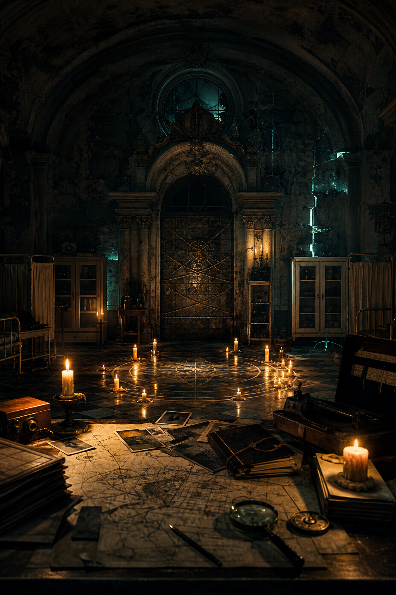

Sala destacada #842
La Llamada Arcana
Plastic Robot
Nota global: 7.6/10
La Llamada Arcana de Plastic Robot en Barcelona. Nota global 7.6/10 con 3 fuentes. Consulta datos, sinopsis, ubicación y fuentes del ranking.